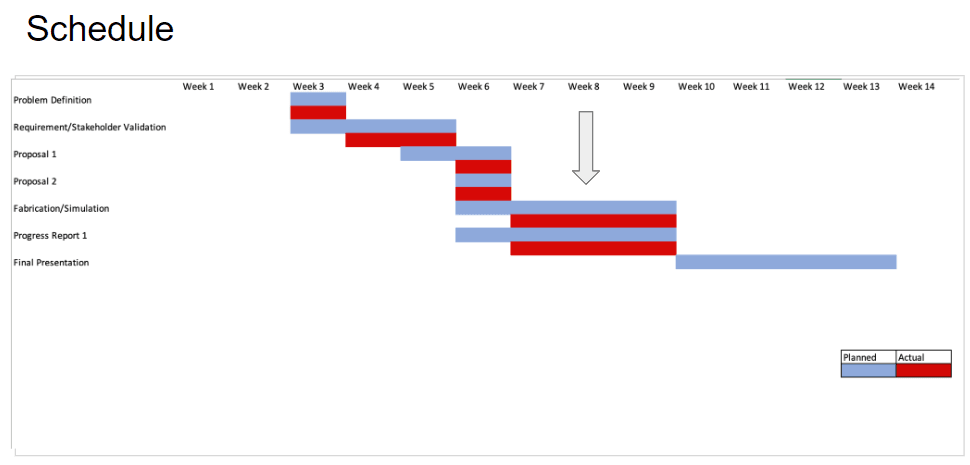
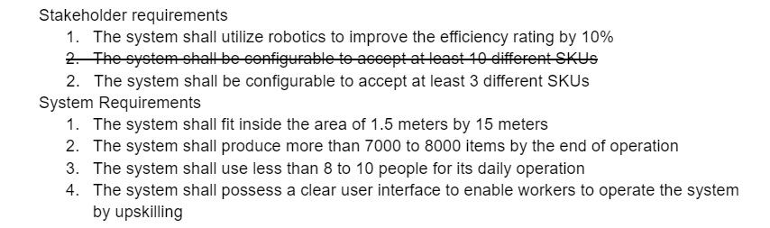
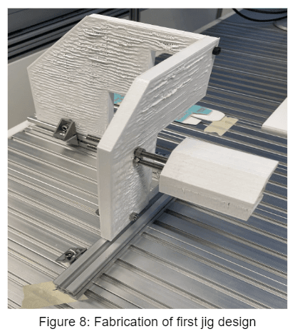

The challenge was to introduce robotics and automation to improve a kitting assembly line. The kitting process analyzed and the decision was made to create a box folding jig and use a Cobot arm to automate it.
Competencies
Project Management
Effectively engaged with stakeholders through regular updates and demonstrations, ensuring their feedback was integrated into the project.
This maintained stakeholder trust and ensured the project met their expectations.
Practiced resource management skills by optimizing the allocation of financial, human, and technical resources.
This included managing the project budget effectively and ensuring the efficient use of team members’ time and expertise.

System Engineering
Worked closely with stakeholders to gather detailed requirements and understand their challenges and needs. This collaboration ensured that the problem analysis was accurate and comprehensive.
Successfully defined and managed system requirements, ensuring clear documentation and traceability throughout the project life cycle.
Developed prototypes and conducted rigorous testing to validate system functionality and performance.

Mechanical Design
Undergone the iterative design process while developing a box folding jig to meet the system needs of box folding

ROS2 - Cobot Arm Programming
Successfully program a cohesive control system for the Cobot arm. Utilized ROS2's capabilities for inter-process communication and real-time data exchange to enhance system responsiveness and reliability.